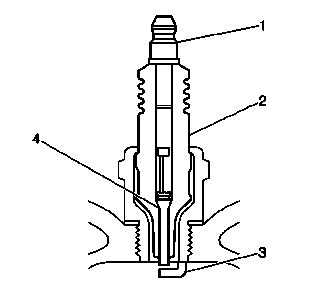
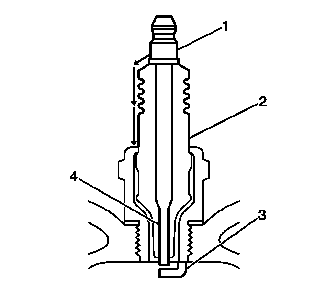
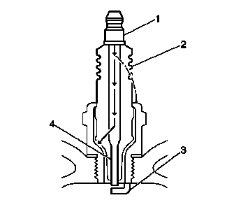
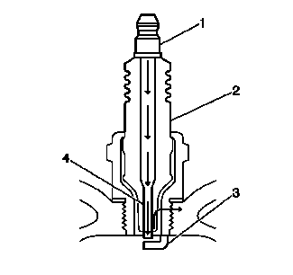

火花塞的检查
火花塞的检查
-

1.检查接线柱 (1) 是否损坏。
- • 检查接线柱 (1) 是否弯曲或断裂。
- • 通过拧动和拉动接线柱的方式，测试接线柱 (1) 是否松动。端子接线柱 (1) 应不晃动。
-

2.检查绝缘体 (2) 是否击穿或有碳痕、碳黑。这是由接线柱 (1) 和接地点之间的绝缘体 (2) 两端之间放电而引起的。检查是否存在如下状况：
- • 检查火花塞套管是否损坏。
- • 检查气缸盖的火花塞槽部位是否潮湿，如有机油、冷却液或水。火花塞套管完全受潮后会引起对地的电弧放电。
-

3.检查绝缘体 (2) 有无裂纹。全部或部分电荷可能通过裂缝而不是电极 (3, 4) 进行电弧放电。
-

4.检查是否有异常电弧放电的迹象。
- • 测量中心电极 (4) 和侧电极 (3) 端子之间的间隙。电极间隙过大可能防碍火花塞正常工作。
- • 检查火花塞扭矩是否正确。扭矩不足可能防碍火花塞正常工作。火花塞紧固扭矩过大会引起绝缘体 (2) 开裂。
- • 检查绝缘体尖端而不是中心电极 (4) 附近是否有漏电迹象。
- • 检查侧电极 (3) 是否断裂或磨损。
- • 通过摇动火花塞检查中心电极 (4) 是否断裂、磨损或松动。
- 5.如果听到喀啦声则表示内部已损坏。
- 6.中心电极 (4) 若松动会降低火花强度。
- • 检查电极 (3, 4) 之间是否存在搭桥短接现象。电极 (3, 4) 上的积碳会减小甚至消除它们的间隙。
- • 检查电极 (3, 4) 上的铂层是否磨损或缺失（若装备）。
- • 检查电极是否过于脏污。
- • 检查气缸盖的火花塞槽部位是否有碎屑。脏污或损坏的螺纹可能导致火花塞在安装过程中不能正确就位。
火花塞的目视检查
- 1.正常工作 - 棕色至浅灰褐色，且带少量白色粉状沉积物，是带添加剂的燃油正常燃烧的副产品。
- 2.积炭 - 由以下情况产生的干燥、蓬松的黑炭或烟灰：
- • 燃油混合气过浓
- • 燃油喷射器泄漏
- • 燃油压力过大
- • 空气滤清器滤芯堵塞
- • 燃烧不良
- • 点火系统电压输出减小
- • 线圈不耐用
- • 点火导线磨损
- • 火花塞间隙不正确
- • 长时间怠速运行或在轻载下低速行驶可导致火花塞始终处于低温状态，使得正常燃烧沉积物无法燃尽。
- • 沉积物污染 - 机油、冷却液或含硅等物质的添加剂（降低火花强度，颜色很白的覆盖层）。大多数粉状沉积物不会影响火花强度，除非它们在电极上形成上釉层。